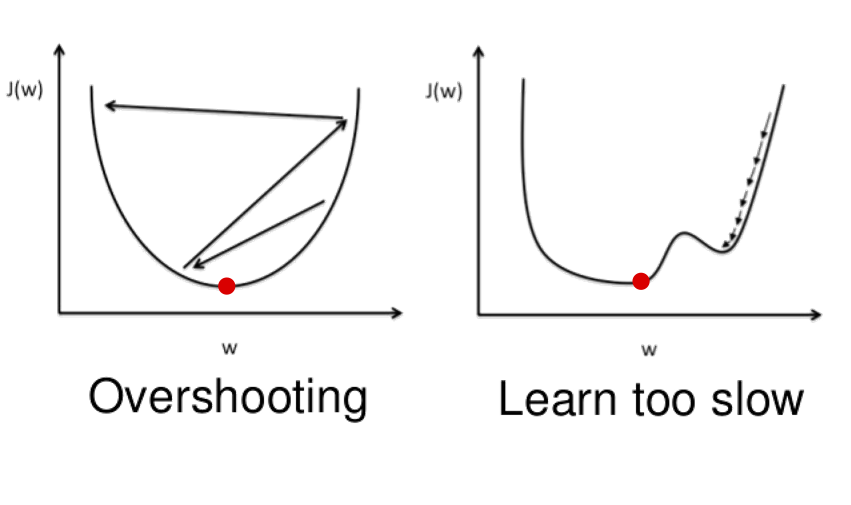
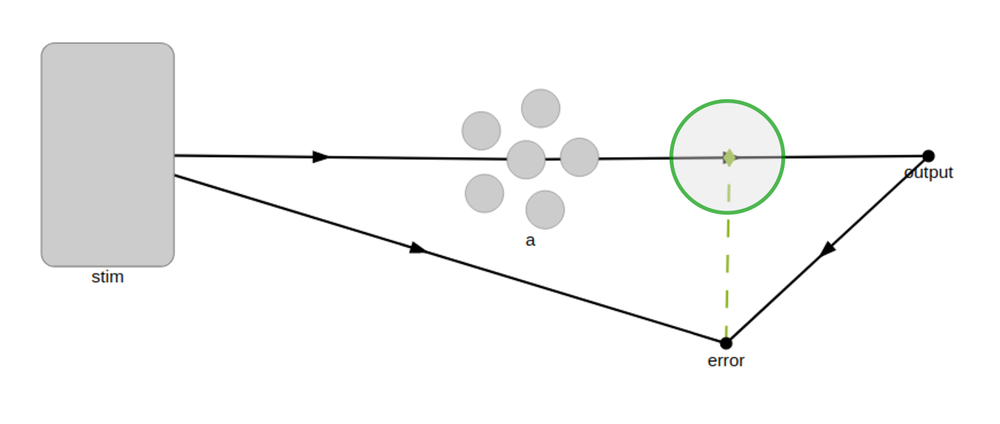
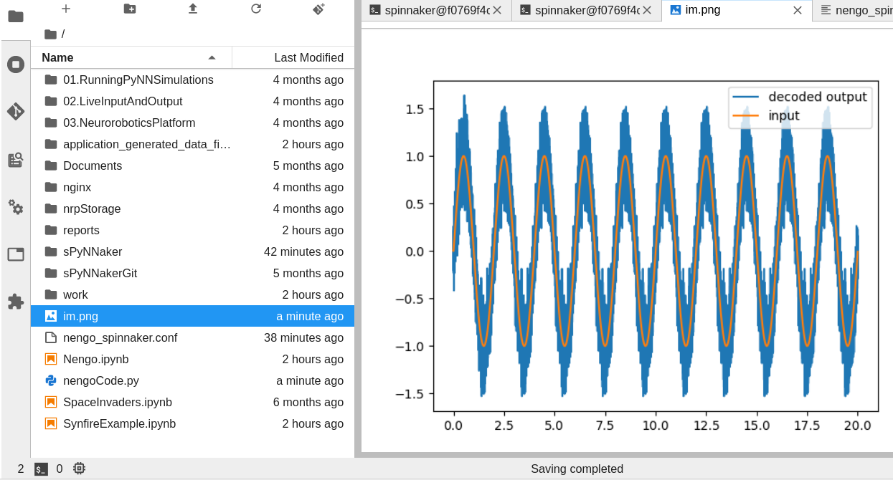
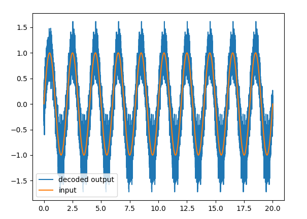

Nengo Workshop
Session 4
Hammouda ELBEZ
Content
--- 1. Learning rule in neural networks 2. Simple network with an error signal 3. Save/load Network 4. Deep neural networks using Nengo 5. Nengo with Spinnaker
Learning rule in neural networks
--- <!-- Content here --> <p class="fragment">- Learning rule is a method or a mathematical logic.</p> <p class="fragment">- Applying learning rule is an iterative process. It helps a neural network to learn from the existing conditions and improve its performance.</p> <div style="text-align: left; float: left;width: 40%;padding-top: 35px;"> <p class="fragment" style="padding: 0px;"><span style="color: #005798;">Types of learning</span><br><br> - Supervised learning<br> - Unsupervised learning<br> - Reinforcement learning<br><br> - Global<br> - Local </p> </div> <div class="fragment" style="text-align: center; float: right;width: 60%;"> <img src="img/learning.png" width="80%"> <!-- more Elements --> </div>
<!-- Content here -->
Simple network with an error signal
--- Learning Rate : the step size at each iteration while moving toward a minimum of a loss function, usually it is equal to 1e-4 (0.0001) <div class="fragment" style="text-align: center; float: center;width: 100%;">  <!-- more Elements --> </div>

Save/load Network (Nengo core)
--- Save information of the network <pre><code data-line-numbers style="padding: 15px;">import pickle #save the learned weights pickle.dump(sim.data[connection_layer1_probe][-1], open( "mnist_params_STDP", "wb" )) </code></pre> Load information of the network <pre><code data-line-numbers style="padding: 15px;">import pickle # weights loaded initiated LoadedWeights = pickle.load(open( "mnist_params_STDP", "rb" )) </code></pre>
Deep neural networks using Nengo
--- <div class="fragment"> - By using Nengo_dl & tensorflow </div> <br> <div class="fragment"> - In most networks, error is calculated as the difference between the actual output and the predicted output. <br>The function that is used to compute this error is known as Loss Function. </div> <br> <div class="fragment"> - The weights are modified using a function called Optimization Function. </div> <br> <div class="fragment"> In Nengo the learning in DNN is done using <strong>Loss function</strong> and an <strong>optimizer</strong>. </div> <br> <div class="fragment"> Training a deep neural network is usually done by using global learning rules, which are not easy to use when working with spikes. </div> <br> <div class="fragment" > Some researchers at Waterloo found a way out. They decided to approximate the spiking neurons in a differentiable rate-based manner during the training process so that the gradient could be calculated and the weights could be updated. Then the weights learned could be substituted in the actual SNN and used. </div>
Create the network and initialize the simulation using nengo_dl <pre><code data-line-numbers style="padding: 15px;">import nengo import nengo_dl ... sim = nengo_dl.Simulator(net, minibatch_size=minibatch_size) </code></pre> Training and evaluation using nengo_dl <pre><code data-line-numbers style="padding: 15px;"># Training sim.fit(...) # Evaluation sim.evaluate(...) # Test other input sim.predict(...) </code></pre> Save/load Network <pre><code data-line-numbers style="padding: 15px;"># save the parameters to file sim.save_params("./net_params") # load parameters sim.load_params("./net_params") </code></pre>
Nengo with Spinnaker
 
END